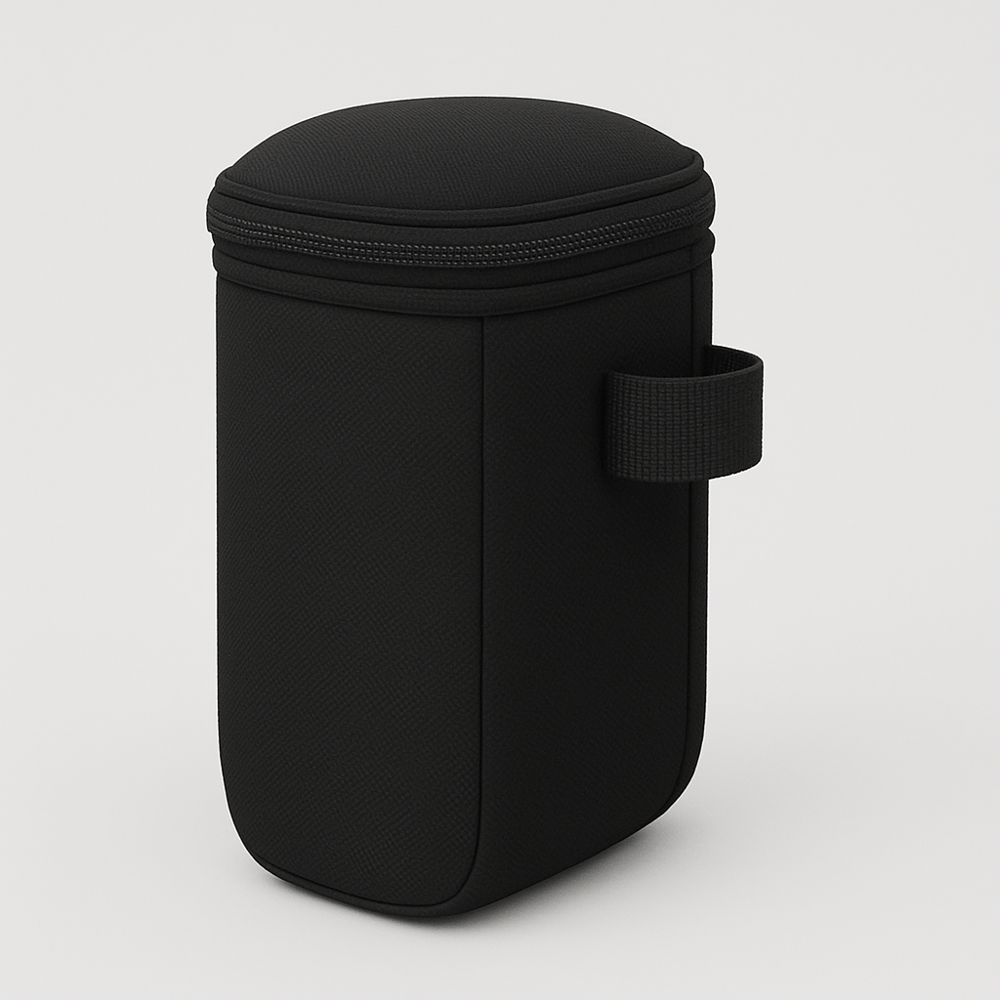
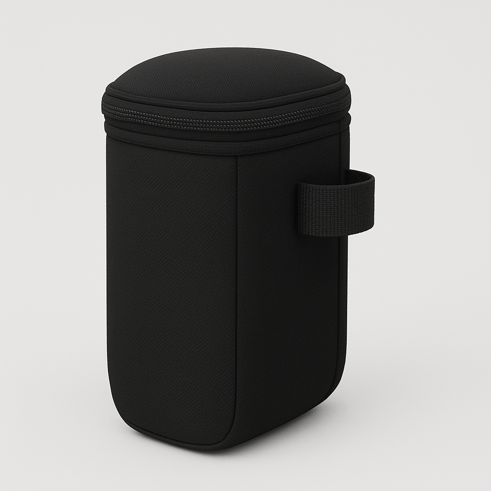

Customer Reviews
⭐⭐⭐⭐⭐ "Perfect for kitchen waste and recyclables. Very handy!" - Ramesh
⭐⭐⭐⭐⭐ "Stylish, sleek, and superb quality!" - Vaishali
⭐⭐⭐⭐⭐ "Stylish, sleek, and superb quality!" - Vaishali
⭐⭐⭐⭐ "Color is exactly as shown in pictures. Beautiful." - Rekha
⭐⭐⭐⭐⭐ "Innovative and must-have for modern homes." - Gaurav
⭐⭐⭐⭐⭐ "Smooth lid operation and strong construction." - Saurabh
⭐⭐⭐⭐ "A bit pricey but worth every rupee for the convenience." - Tanya
⭐⭐⭐⭐⭐ "Best dustbin I ever bought. Two bins, one body!" - Mehul
⭐⭐⭐⭐ "I use it for biodegradable and plastic separately. Works great!" - Kavita
⭐⭐⭐⭐⭐ "Perfect for separating wet and dry kitchen waste." - Arjun
⭐⭐⭐⭐ "Delivered on time, well packed, good product." - Sneha
⭐⭐⭐⭐⭐ "Very convenient for recycling at home. Looks stylish too." - Ashok
⭐⭐⭐⭐ "Got it for my mom, she loved the dual-bin idea." - Pooja
⭐⭐⭐⭐ "Great space-saver for my small apartment." - Neha
⭐⭐⭐⭐⭐ "Finally no more mixing of dry and wet waste. Thanks!" - Vikram
⭐⭐⭐⭐ "Could be slightly bigger but very functional." - Shruti
⭐⭐⭐⭐⭐ "Material is strong and the design is modern." - Deepak
⭐⭐⭐⭐ "Smart concept with two compartments. Very useful." - Anjali
⭐⭐⭐⭐⭐ "Looks elegant in my office pantry. Love it!" - Sameer
⭐⭐⭐⭐ "Good size and sturdy quality. Worth the price!" - Priya
 
